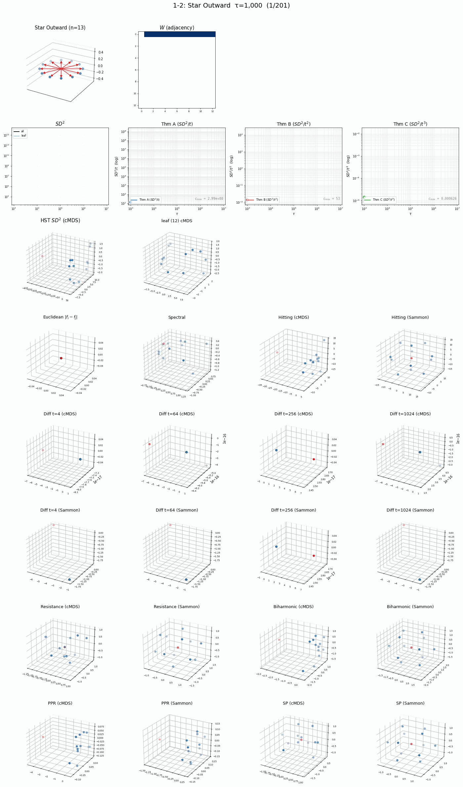
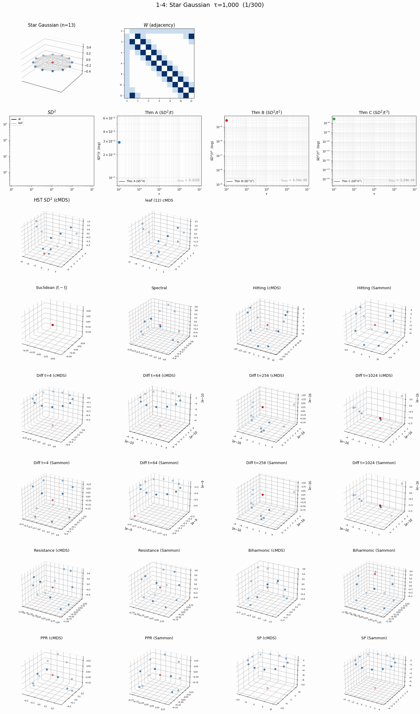
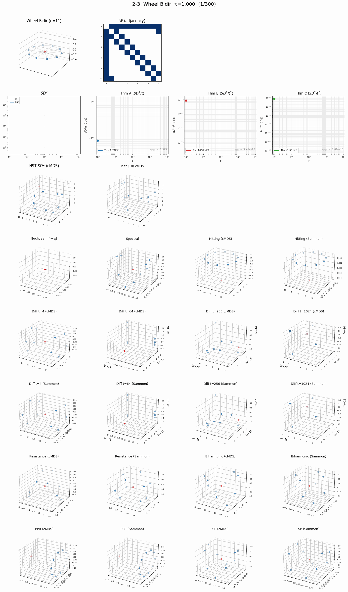
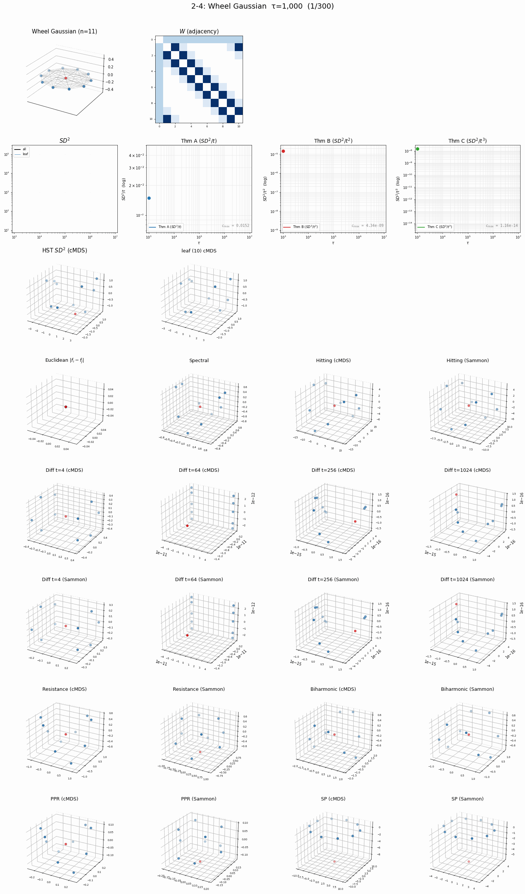

연구 ▷ 눈사람연구소 ▷ HST 실험 연구
§1. 그래프 구조 검증 (\(f = 0\))
1.1 Star Inward (1-1)

1.2 Star Outward (1-2)

1.3 Star Bidir (1-3)

1.4 Star Gaussian (1-4)

1.5 Wheel Inward (2-1)

1.6 Wheel Outward (2-2)

1.7 Wheel Bidir (2-3)

1.8 Wheel Gaussian (2-4)

1.9 Helm Inward (3-1)

1.10 Helm Outward (3-2)

1.11 Helm Bidir (3-3)

1.12 Helm Gaussian (3-4)

1.13 D-Helm Inward (4-1)

1.14 D-Helm Outward (4-2)

1.15 D-Helm Bidir (4-3)

1.16 D-Helm Gaussian (4-4)

1.17 Dir Path (5-1)

1.18 Bidir Path (5-2)

1.19 Gauss Path (5-3)

1.20 Dir Ring (6-1)

1.21 Bidir Ring (6-2)

1.22 Gauss Ring (6-3)

1.23 Cyl Inter-dir (7-1)

1.24 Cyl Inter-bidir (7-2)

§2. 신호 변형 검증 (\(f \neq 0\))
2.1 Parity Cycle (S2-1)

2.2 Dir Cycle ±1 (S2-2)

2.3 Outlier Cyl (S2-3)